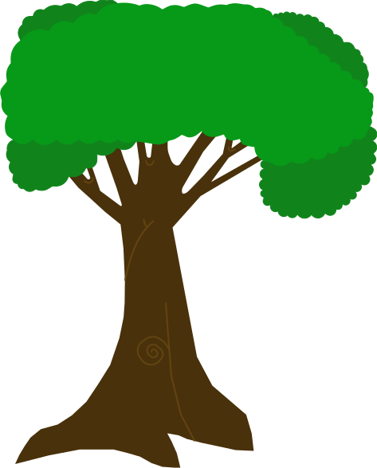
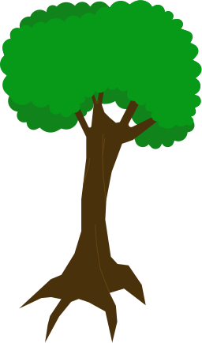
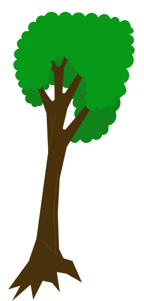
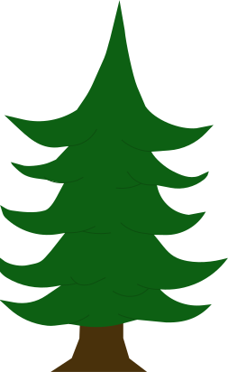
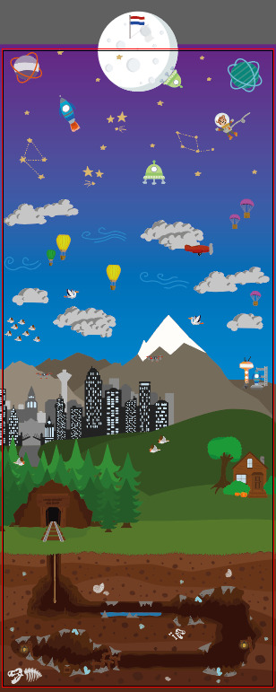

Multimedia Production
3 EC's
Hoe kan ik een poster op een juiste manier naar een drukker sturen?
Hoe kan ik de basis van Adobe Illustrator beheersen?
Uitvoering
Bewijsvoering
Uitvoering
Hoe kan ik een poster op een juiste manier naar een drukker sturen met Adobe inDesign?
Leer-subdoelen
Waar moet ik op letten?
Activiteit
Ik tijdens dit project niet in Adobe inDesign gewerkt. Wel had ik Esmee al eerder gevraagd over het opsturen van een poster naar de drukker als het klaar is. Zij heeft hier een PDF voor opgesteld zodat ik er alsnog van kan leren en kan gebruiken zodra ik wel inDesign ga gebruiken.
De inhoud van deze PDF is te vinden in de bewijsvoering.
Uitkomst
Ik heb geen uitkomsten omdat ik niets heb gemaakt. Wel heb ik kennis opgedaan over het instellen en opsturen van een poster.
Reflectie
Dankzij Esmee heb ik toch iets belangrijks geleerd over Adobe inDesign zonder dat ik er in gewerkt heb. Ik weet nu waar ik op moet letten en welke instellingen belangrijk zijn voor de drukker.
Ik heb geleerd dat ik een afloop moet instellen en dat deze in de meeste gevallen 3mm is. Ik weet nu ook dat ik tijdens het ontwerpen op bepaalde dingen zoals marges moet letten. Ook heb ik geleerd wanneer ik de instelling CMYK en wanneer ik RGB moet gebruiken.
Hoe kan ik de basis van Adobe Illustrator beheersen?
Leer-subdoelen
Hoe kan ik een schets digitaliseren in illustrator met behulp van de pen tool?
Hoe kan ik een de gemaakte afbeelding correct exporten zodat anderen deze kunnen gebruiken?
Activiteit
Ik heb de foto's van de schetsen geopend in Illustrator. Deze heb ik als achtergrond laag gezet.
Ik heb eerst een stel youtube tutorials bekeken om te leren hoe ik met de pen tool om moet gaan. Daarna heb ik een nieuwe laag gemaakt voor de boomstronk en deze met de pentool overgretrokken.
Daarna heb ik nog een laag gemaakt om de bladeren over te trekken. In mijn schetsen had ik losse bladeren getekend alleen dit wou niet heel gemakkelijk in illustrator.
Ik heb in plaats daarvan een nieuwe laag gemaakt en stukken opnieuw overgetrokken maar dan donkerder. Dit geeft een gevoel van diepte.
Uitkomst
Nadat ik klaar was met het maken van de bomen heb ik aan Joost gevraagd in welk formaat hij de bomen wilde. Joost wilde ze in beide .pdf en .ai formaat. Ik heb eerst de achtergrond laag eraf gehaald en daarna alle lagen samengevoegd. Ik heb opgezocht hoe ik lagen samen kan voegen en groeperen. Hierdoor kan Joost ze als één element gebruiken bij het ontwikkelen van de poster.
De bomen die ik gemaakt heb zijn door de gehele poster gebruikt. Ik heb twee soorten bomen gemaakt: eik en spar. De sparren zijn gebruikt om een bos te vormen en de eikenbomen zijn gebruikt om bij de losse huizen als decoratie te sieren.
Reflectie
Ik had de pen tool al snel onder de knie. Ik was al bekend met het concept van ankerpunten dus dat hielp wel. Toen ik eenmaal leerde om met de curvetool te werken werd het maken van de bladeren een stuk gemakkelijker. Door daarna nog extra ankerpunten te maken en deze af te ronden werden alle bladeren mooi rond en zag het er heel netjes uit.
Ik ben er van overtuigd dat ik de pen tool goed onder de knie heb. Ik kan gemakkelijk een schets die ik gemaakt heb digitaliseren.
Het exporteren was gemakkelijker dan ik gedacht had. Met slechts een paar clicks was alles aan elkaar gegroepeert. Het bestand exporteren ging zoals je met andere programma's zou doen: "opslaan als" en dan het gewenste bestandsformaat.
Ik heb geleerd hoe ik een bestand in Adobe Illustrator op de juiste manier kan exporteren zodat anderen er gebruik van kunnen maken.
Bewijsvoering
Ontwikkelfase
Dit zijn de uiteindelijke bomen die ik gemaakt heb in Adobe Illustrator. De bomen zijn overgetrokken van de schetsen met de pen tool.



Dit is de uiteindelijke poster. Zoals te zien zijn niet alle bomen gebruikt omdat daar niet genoeg ruimte voor was.
